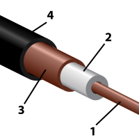
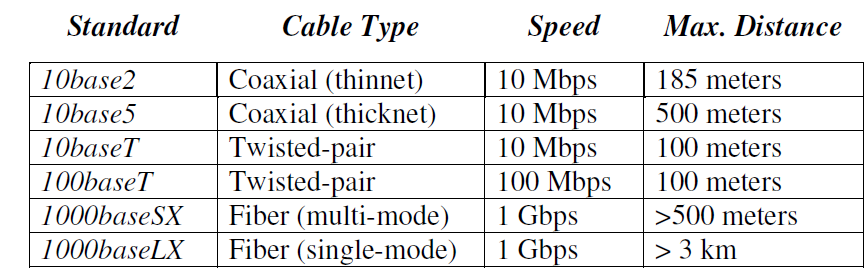
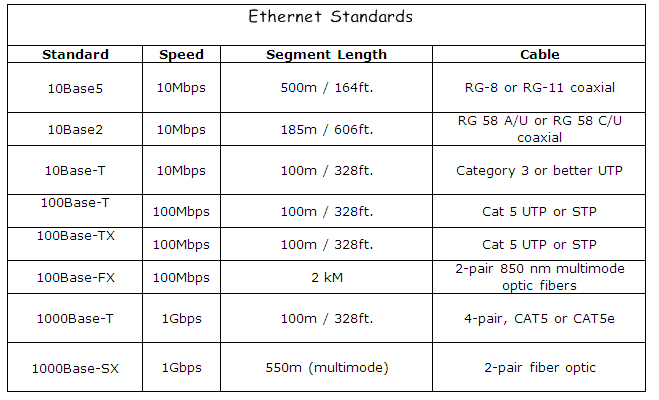
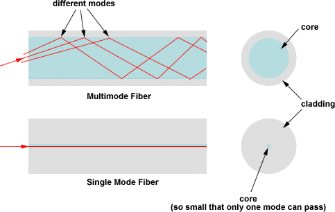
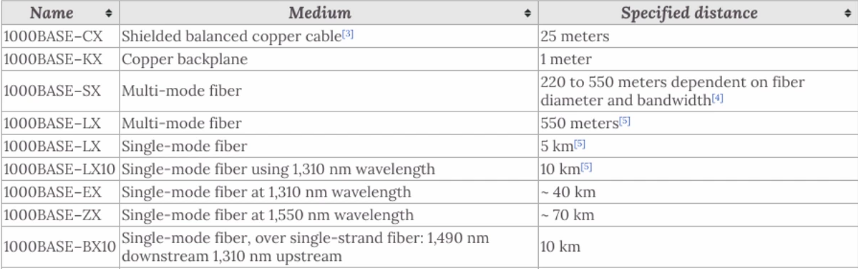
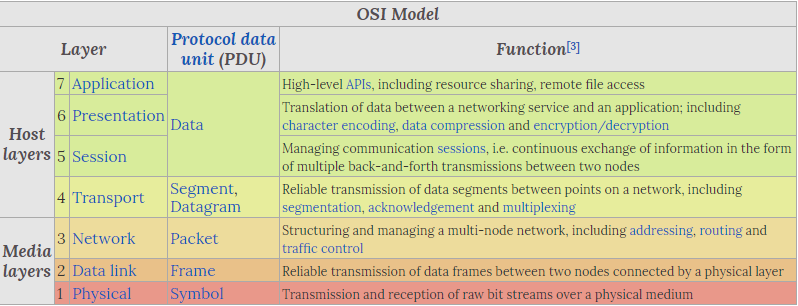
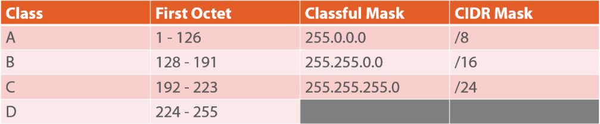
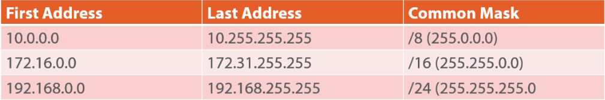
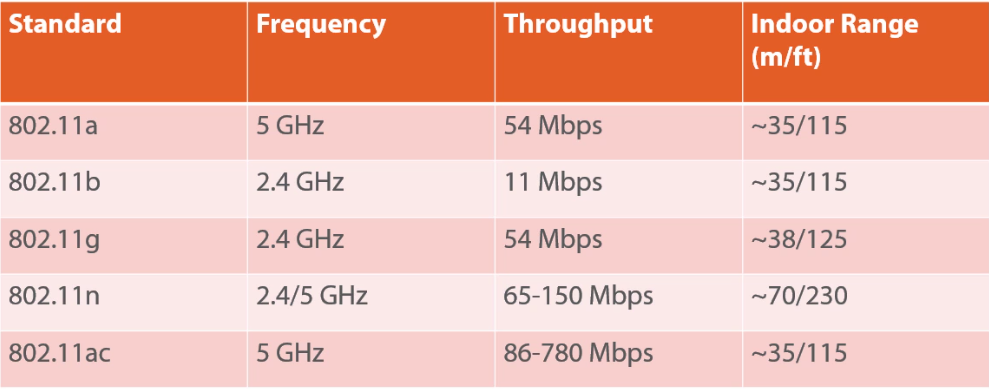

2. Networking¶
2.1. Network Cables and Connectors¶
Basic Vocab¶
- Wire: A Single Conductor
- Cable: Two or more bundled conductors
- Cord: Cable optimized for extreme environments
- Crosstalk: Unwanted signal transfer between communication channels
- Electromagnetic Interference (EMI): One signal disturbs another
- Twisted Pair Cable helps to address EMI
- Attenuation: Gradually increasing loss of signal strength
- Often due to the run of cable/cord
Base Band vs. Broadband¶
- Base Band
- Transmits digital signals
- Signal uses entire bandwidth of media
- Carries one ‘lane’ of digital signal at a time
- Data, Voice, Video signals are bi-directional
- Same channel used to send/receive signals
- Interleaves digital signals, frequency based multiplexing not possible
- Broadband
- Transmits analog signals
- Segregates signals to certain portions of the bandwidth (Enables multiplexing)
- Carries signals simultaneously (multiple lanes)
- Is able to transmit Data, Voice, Video at same time
- Data, Voice, Video signals are Unidirectional
- Two pathways are needed to send and receive
- Can be accomplished by assigning frequencies or using two cables
Coaxial Cable¶

Diagram of Coaxial Cable
- Composed of 4 layers
- Copper Core
- Dielectric Insulator
- Woven copper shield
- Outer plastic sheath
- Radio Guide RG-58 (Thinnet Ethernet)
- 10 Mbps
- Max length: 185 meters
- Uses a BNC connector (push and twist)
- Has been replaced by twisted pair
- RG-59 and RG-6
- Normally used for cable television
- Provides internet service
- Uses a F-connector
- Center core prone to bending when connector is forced
- Resources:
Signal Splitters¶
- Allows branching one cable into two or more additional connectors
- Should try to avoid due to signal degradation
Twisted-pair Copper Cables¶
- Has copper conductors
- Comes in shielded and un-shielded variations
- Shielded helps protect against EMI and Crosstalk
- Twisting cables reduces RMI
- Cables have specific pinouts
- Pinouts define the meaning of each wire
TIA 568 Standard¶
- TIA: Telecommunications Industry Association
- Defines pinouts for T568A and T568B standards
- Used by RJ-45 Ethernet connectors
- Wiring Standards
- Straight Cable
- Often used between device and wall port
- Has same connector on each end (568A - 568A)
- Crossover Cable
- Often used for Peer to Peer networking
- Used to hook two devices together
- Send/Receive connectors are flipped on each end (568A - 568B)
- Crosses over send/receive wires: send pins on one device attach to receive pins on the other
- Cables are normally yellow
- Rollover Cable
- Often used to connect directly to router
- Connectors are mirrored (568A - Reverse of 568A)
- Cables are typically blue
RJ-45 vs. RJ-11¶
- RJ: Registered Jack
- RJ-11
- Most often used with phone chords
- 4 conductors (typically only 2 are used: send/receive)
- RJ-45
- Most often used for ethernet
- 8 conductors (4 pais)
- Fast Ethernet Standard (100 Mbps) uses only 2 pairs
- Gigabit Ethernet (1000 Mbps) uses all 4 pairs
Twisted-Pair Ethernet Standards¶

Simple Diagram of Ethernet Standards

Diagram of Ethernet Standards
- Notes:
- Cat 5 minimum required for Fast Ethernet (100 Mbps)
- Cat 5e/6a current standards for industry (Gigabit/10 Gig Ethernet)
- Standard max distance run is 100 m
Fiber-optic Cables¶
- Transmits light instead of electricity
- Pros:
- Security
- Speed
- Distance
- Cons:
- Expensive
- Termination of cable ends
- Flexibility of cable
Fiber-optic Cable Modes:¶

Image of Single-Mode vs Multi-Mode Fiber Cables
- Single-Mode Fiber:
- One light path; permits longer distances
- Best used for WAN, connecting buildings
- Core is much smaller than multi-mode: single light wave helps eliminate distortion resulting from overlapping light pulses; provides less signal attenuation compared to multi-mode
- Multi-Mode Fiber:
- Many light propagation paths; shorter distance than single-mode
- Diameter of core is larger than single-mode fiber: results in distortion over long runs (>900 m) due to light paths crossing each other
- Less expensive than single-mode
- Often used within buildings to link switches/machines
Fiber-optic Connectors:¶
- SC
- SC: Subscriber Connector, Square Connector, Standard Connector
- Coupling Type: Snap
- 2.5 mm size
- Capable of Duplex Mode (separate send/receive cables)
- ST
- ST: Straight Tip
- Also referred ot as a BFOC: Bayonet Fiber Optic Connector
- Coupling Type: N/A; Press and turn to connect
- 2.5 mm size
- LC
- LC: Lucent Connector, Little Connector, Local Connector
- Coupling Type: Snap
- 1.25 mm size (compact compared to SC and ST)
- Capable of Duplex Mode (separate send/receive cables)
Fiber Ethernet Standards¶

Chart of Fiber Ethernet Standards
Cable Runs¶
- Traditional cables that are coated with PVC give off toxic fumes when burning
- PVC vs. Plenum
- Plenum is an enclosed space used for airflow (E.g., above drop ceiling or below raised floor)
- Plenum grade cable should always be used in a plenum space
- If there is a fire, Plenum rated cable will help prevent toxic fumes
Cable Termination¶
- Wall outlets and wiring closets should be labeled
- Patch panels and terminations can be twisted pair or fiber-optic cable
2.2. TCP/IP Basics¶
Open Systems Interconnection (OSI) Model¶

Chart of OSI Model
- OSI is a model that standardizes host-to-host communications
- Codified in ISO/IEC 7498-1 Standard
- OSI is a 7 layer model that makes it easier for vendors to develop products
- Mnemonics for OSI Layers:
- Layer 7 to Layer 1: All People Seem to Need Data Processing
- Layer 1 to Layer 7: Please Do Not Throw Sausage Pizza Away
OSI Layer Notes¶
Layer 3: Network¶
- Level at which the Router operates
Layer 2: Data Link¶
- Layer at which the Switch operates
- Layer at which there are MAC addresses
Layer 1: Physical¶
-Layer at which the NIC operates
MAC Addresses¶
- MAC: Media Access Control
- Sits at OSI Layer 2
- Hardware address on every TCP/IP host
- Intended to be a permanent address identifier
- Can be spoofed
- Hexadecimal (base 16) formatting for addresses
- MAC addresses are 48 bits long
- First 24 bits is the Organizationally Unique Identifier (OUI) for a vendor/manufacturer
- OUIs are purchased and assigned by the IEEE.
- If 2 NICs with the same MAC com online in the same subnet, the TCP/IP stack will shut down on both hosts
- Second 24 bits are Vendor-assigned
IPv4 Address Basics¶
- Defined in Request For Comments (RFC) 791
- RFC is where all networking/web standards are codefied
- IPv4 address space maintained by Internet Assigned Numbers Authority (IANA)
- The public address pool is exhausted
- IPv4 address are 32 bits (4.2 billion addresses)
- IP addresses need a Subnet Mask to be meaningful
- Subnet Mask allows TCP/IP host to determine what network segment it is on
- Default gateway is ‘near side’ router interface
IPv4 Structure¶
- 32 bits broken into four sections of 8 bits (octets) and represented in decimal
- First 3 octets are the network ID
- Last octet is the host ID
Classful vs Classless Internet Domain Routing (CIDR) IPv4 Addresses¶

IPv4 Classes
- Classful addressing: Network breaks at each octet boundary
- Classless addressing: Network break at any bit boundary
- Useful for creating subnets
- E.g., 192.168.0.0/19 (255.255.244.0) gives 8 subnets with 8,190 hosts per subnet
- /19 signifies the first 19 bits will be used for networks, thus changing the subnet
- Class D is often used for multi-casting
- Loopback address is a reserved address and is 127.0.0.1
- Used for diagnostics
- If you can pink Loopback, the TCP/IP stack is working
RFC 1918 Private Addresses¶

IPv4 Private Addresses
- Private address cannot be routed: routers will view these address as private and will not pass packets onto the internet
Automatic Private IP Addresses (APIPA)¶
- Address Space: 169.254.0.0/16 (255.255.0.0)
- Indicates DHCP problem: unable to get an IPv4 address
IPv6 Address Basics¶
- Finalized in RFC 1883 (1996)
- 128-bit addresses
- 5x10^28 address for every person!
- IPv6 has simplified headers
- Built-in encryption
- IPv6 build to co-exist with IPv4
IPv6 Address Format¶
- Uses hexadecimal
- 128 bits broken into 64 bits for network and 64 bits for node
- 8 groups of 4 hex digits, with each group representing 16 bits (2 octets)
- Can drop leading zeros and compress addresses
- DHCPv6 is used to help assign IPv6 addresses
- IPv6 E.g., 2001:0db8:45b6:0:0:0:0:1
- compress into: 2001:db8:45b6::1
Stateless Address Autoconfiguration (SLAAC)¶
- Any IPv6 device will generate a Link-local address: fe80::/64
- Link local address will not pass through a router
- Loopback address is ::1/128
Client IP Configuration¶
- Know which hosts can be static vs dynamic IPs
- User clients can usually be taken care of by DHCP
- Servers, Printers, etc, should have static IPs
- Subnet mask
- Shared by all hosts within the same network
- Default gateway
- refers to the router address on the network that allows hosts to communicate outside the network
- DNS server address(es)
- allows for names to be correlated to IP address
2.3. Ports and Protocols¶
Comparing TCP and UDP¶
TCP¶
- TCP: Transmission Control Protocol
- Operates on OSI Layer 4
- Connection-oriented protocol: emphasis reliable delivery of segments
- Slower than UDP due to overhead required for reliable connection
UDP¶
- UDP: User Datagram Protocol
- Connectionless
- Faster than TCP due to less overhead
- No checking if packets were received properly: results in data dropouts
How Socket Addresses Work¶
- Socket is the combination of an IP address and TCP/UDP Port number
- Each application listens to incoming connections on certain ports, and only responds when port + IP requests line up
Well-known Ports¶
- Ports are maintained by IANA
- 16-bit port number address space (0 - 65,535)
- Well-known range: 0 - 1024
- Registered range: 1024 - 49151
- Dynamic (ephemeral) range: 49152 - 65535
Major Port and Protocols¶
- FTP: Ports 20, 21
- SSH: 22
- TELNET: 23
- SMTP: 25
- DNS: 53
- DHCP: 67, 68
- HTTP/HTTPS: 80, 443
- POP3: 110
- SMB/CIFS: 137-139; 445
- IMAP: 143
- SNMP: 161, 162
- LDAP: 389, 636
- AFP: 427, 548
- RDP: 3389
2.4. Wi-Fi Networking¶
Radio Frequency (RF) Communication¶
- Uses wireless EM signals for data communications
- Wi-Fi nodes are both receivers and transmitters; need an antenna to propagate the waves
IEEE 802.11 Standards¶

Wi-Fi Standards
- 802.11a is not compatible with other standards: not used often
- 802.11n is dual band
- 2.4 GHz is prone to interference
2.4 GHz Band Wi-Fi Channels¶
- 15 channels spread 5 MHz (involves overlap)
- Channel availability is regulated by country: FCC for US
- Should aim to use non-overlapping channels
5.0 GHz Band Wi-Fi Channels¶
- Covers 802.11a, n, and ac
- 23 non-overlapping channels in US
- Selecting right channel is a powerful tip
Wireless Security and Encryption Protocols¶
Wired Equivalent Privacy (WEP)¶
- Superseded by WPA
- 64 or 128 bits
- Initialization Vector (IV) keyspace is only 24 bits
- Easy to brute force IV
Wi-Fi Protected Access (WPA)¶
- Successor to WEP
- Encryption via Temporal Key Integrity Protocol (TKIP): new 128-bit key per packet
- Much stronger than WEP
- Wi-Fi Protected Setup (WPS)
- Allows user to press a button on router and end device to easily set up wireless access
- A PIN is generated and transferred between router and device in order to pair
- WPS uses 8 digit PIN, which can be compromised via hacking software
- Not very suitable for business
Wi-Fi Protected Access 2 (WPA2)¶
- Successor to WPA
- Uses Advanced Encryption Standard (AES) encryption: 192 to 256 bit encryption
- Use Cases:
- Personal Use: WPA2 uses a Personal Shared Key (PSK) (AKA passphrase) to serve as encryption key
- Enterprise Use: Can use Extensible Authentication Protocol (EAP) and RADIUS to centralize user authentication
- Advanced WPA2 settings can be more difficult to configure
2.5. SOHO Networking¶
SOHO Routers¶
What is a SOHO Router?¶
- Wired/wireless router that serves 1-10 people
- Usually a multi-function device
- Built in WAP
- Acts as Switch (OSI Layer 2)
- Firewall and DHCP server
- Router (OSI Layer 3)
- Some enable VPN connections
The SOHO Wireless Router¶
- Often has:
- Power Button
- Reset button
- USB Port
- RJ-45 LAN jacks
- RJ-45 Uplink/WAN Port
- Antenna(s)
SOHO Router Configuration¶
Dynamic Host Configuration Protocol (DHCP)¶
- Uses UDP 67, 68
- DHCPv4: RFC 1541 (IPv4 Spec)
- DHCPv6: RFC 3315 (IPv6 Spec)
- DHCP assigns IP address to hosts on a network
- Hosts will be assigned assume an APIPA if an IP cannot be assigned
Network Address Translation (NAT)/DNAT¶
- Also referred to as a Port Address Translation (PAT)
- NAT Allows sharing a public IP address among multiple hosts
- DNAT is Destination NAT
- Inbound NAT
- Advertising a computer on your network to the internet
- E.g., hosting a web server
- NAT has a table and keeps track of inside local addresses and the global addresses and ports that they are trying to communicate with.
- The NAT will use this table to determine which internal IP address traffic should be routed to.
Port Forwarding/Triggering¶
Enables routing traffic to certain hosts that comes into the router/firewall on specific ports
Demilitarized Zone (DMZ)¶
- AKA Screen Subnet
- Host on the local network that is specified to be publicly accessible
Basic Quality of Service (QoS)¶
- Ability to prioritize/limit traffic of certain traffic/services
- E.g., VoIP
Firmware¶
- SOHO router’s OS
- Should take caution if attempting to upgrade router firmware
- DD-WRT is a popular open-source 3rd party firmware
Universal Plug-and-Play (UPnP)¶
- Applications can automatically forward ports on your router
- UPnP may be enabled by default on routers
- Malware can capitalize on UPnP
Security Tips¶
- Tripwire VERT white paper
- Disable Web-based remote management
- Set strong passwords
- Disable WPS
- Change all defaults
- Update firmware (after research)
2.6. Internet Connection Types¶
Network Types¶
Local Area Network (LAN)¶
- Area of high-speed connectivity contained within a single location
- The business usually owns all networking equipment
Wide Area Network (WAN)¶
- Two or more LANs that use a service provider to establish network connectivity
- Business almost always leases the WAN from a service provider
- Usually distinguished by a good degree of geographical distance between sites
Metropolitan Area Network (MAN)¶
- Larger inter-network that spans buildings or multiple sites in the same city
- Sometimes conflated with the Campus Area Network (CAN)
- Often has a service provider involved: MAN is basically a WAN
Wireless LAN (WLAN)¶
- Wireless Access Points (WAPs)
- E.g., home WAPs, coffee shop offering Wi-Fi to customers
- Antennas are key to WLAN design
- Double NATs can be a problem in home WLANs
Personal Area Network (PAN)¶
- Near Field Communication (NFC)
- Bluetooth, infrared, etc
- Consumer electronics often use bluetooth on PANs
Internet Connection Types¶
Analog Modem and Integrated Services Digital Network (ISDN)¶
- Analog Modem
- ‘Old’ way
- Analog-to-digital modulation
- Computer speaks digital and modem converts to analog
- Dial up
- Can use voice or data (not both at same time) only @ 53 Kbps
- ISDN
- Voice or data over Public Switch Telephone Network (PSTN)
- Can talk on phone while online
- B channel: 64 Kbps x 2 (128 Kbps total)
- D channel: 16 Kbps control channel
- Required modem and ISDN telephones
Digital Subscriber Line (DSL) and Broadband Cable¶
- DSL
- Uses RJ-11 and RJ-45 jacks
- Digital voice and data over PSTN
- Normally purchased as Asynchronous DSL (ADSL) (downloads speeds are higher than uploads)
- Uses Point-to-Point Protocol Over Ethernet (PPPoE) and IP
- Requires Filters for any RJ-11 connections
- Broadband
- Data over cable TV coaxial cabling
- Generally asymmetric transfers (Separate up/down speed)
- Uses DOCSIS specification
Fiber Internet¶
- Often the most expensive
- Cheaper alternatives can be a combination of coaxial and fiber
Satellite Internet¶
- Appropriate for remote locations
- Needs satellite dish and line of sight
- Long latency because altitude of satellites
- Sensitive to weather
- Often a pay for data transfer business model
Cellular Networks¶
- Carrier Standards:
- GSM: Global System for Mobile Communications
- CDMA: Code Division Multiple Access
- Some companies restrict access one standard
- Owning an unlocked smart phones allows you to use either
- Service Levels:
- 2G: Edge: 135 Kbps down
- 3G: High Speed Packet Access (HSPA+): ~4 Mbps
- 4G: Long Term Evolution (LTE): 50 Mbps
Tethering¶
- Turns your smartphone into a NAT router/Wi-Fi hotspot
- Can share smartphone cell service with internet-enabled devices
- Some phones support tethering natively, other need to be jailbroken/unlocked
- Reverse tethering is using your laptops internet connection with you smartphone
- Not very common
Line-of-Sight Wireless Internet¶
- Wireless point-to-point Ethernet
- Useful in remote areas where fiber interconnects won’t work
- Antennas need to be high enough to overcome environmental interference (Fresnel Zone)
- 5 Mbps - 150 Mbps over several-mile distances
2.7. Network Architecture Devices¶
The Hub¶
- Works at OSI Layer 1 (Physical)
- Supplanted by the Switch
- Hubs are multi-port repeaters
- Con is that the hub is a big collision domain: all devices sharing same bandwidth/circuity of hub
- Hubs are useful for network diagnostics (wireshark), but not much else
- Shares full speed with each connected device (E.g., 100 Mbps sum max)
Switch¶
- Successor to the Hub and Bridge
- Bridges helped segment a collision domain into two domains
- Uses ASIC: Application-Specific Integrated Circuit
- Highly performant and intelligent
- Works at OSI Layer 2 (Data Link) with Ethernet Frames
- Some can also function at OSI Layer 3 (Network) if they have a routing module
- Switches can store a table of all MAC addresses that are connected to it
- Has one broadcast domain that can reach every port: MAC broadcast address of FF:FF:FF:FF:FF:FF
- Can segment each port into its own collision domain
- Can provide full speed to each connected device (E.g., 100 Mbps to each device)
Bridge¶
- Originally 2-port switches
- Used as gateways in more recent times
- Wi-Fi bridges can connect pods of wired hosts to a WAP
Router¶
- Operates at OSI Layer 3 (Network)
- Uses IP addresses to route traffic
- Separates entire networks and broadcast domains
- Enables creating multiple subnets and segmenting a network
Wireless Access Point (WAP)¶
- Provides IEEE 802.11 connectivity
- Many support Power over Ethernet (PoE)
- PoE is defined in the IEEE 802.3af standard
- 15.4 watts of power
- Can use a WLAN controller to help manage WAPs
Analog Modem¶
- Modulates digital signals to analog for transmission over PSTN
Firewall¶
- Exists as software or hardware
- Selectively allow or block network traffic
- Packet-filtering firewall: Uses IP address and port numbers
- Stateful-Packet Inspection (SPI): Identifies sessions and enforces rules on higher-level applications/services
Patch Panel¶
- Cable termination point
- Offers modulatiry
- Uses a punchdown tool to attach separate wires onto panel
- Can easily move hosts from one switch port to another
Repeater/Extender¶
- Helps break 100 meter attenuation barrier
- Some include PoE support
Ethernet over Power (Powerline Ethernet)¶
- 100-500 Mbps through mains AC power
- Useful in reducing cable clutter or in avoiding running cable
- AC adapters have a RJ45 port
Power Over Ethernet¶
- IEEE 802.3af standard
- Useful for IP phones, WAPs, IP cameras, etc.,
- PoE Injectors can bridge Non-PoE and PoE devices
- Not practical for large applications
- PoE Midspan acts like a PoE switch to provide power to more devices (larger scale than injector)
2.8. Networking Tools¶
Hardware Tools¶
Cable Crimpers¶
- Used to attach a connector (E.g., RJ-45) on the end of a cable
Wire Strippers¶
- Used to strip off outer insulation
- Can use cable spline to ensure you don’t nick the copper wires
Snips¶
- Used to cut something
Multimeter¶
- Measures voltage, current, and resistance
- Useful to verify DC power supply voltages
- Some measure AC and DC
Tone Generator and Probe¶
- Used to trace cables
- Can be Used to check cable continuity
- Most often used with troubleshooting and documentation
Cable Tester¶
- Used to test whether a cable is working properly
- Can verify continuity, speed, etc.
Punchdown/Impact Tool¶
- Used to terminate cables into outlets/patch panels
Loopback Plug¶
- Used to ‘fool’ an OS or application into thinking it has an active internet connection
- E.g., Installing Windows NT
- Used a low-tech way to test network cable/switch port
- E.g., If light comes on when plugging in Loopback Plug
Software Tools¶
Protocol Analyzer¶
- E.g., Wireshark
- Can analyze network on frame by frame basis
- Analyze wired and wireless ethernet traffic
- Hosts can be combined on a Hub to catch all traffic in the same collision domain (AKA Hubbing Out)
- Otherwise, capturing traffic on a switch requires port mirroring
Wi-Fi Analyzer¶
- Builds heat maps to visualize Wi-Fi connectivity
- Visualize WLANs and Channels